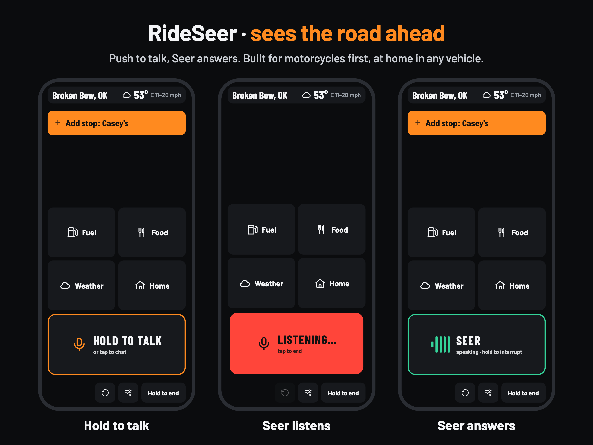
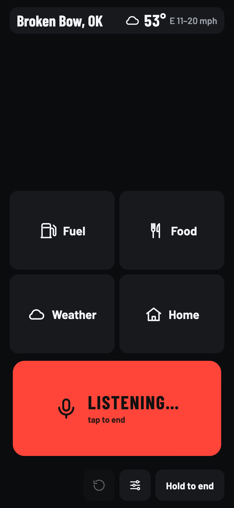
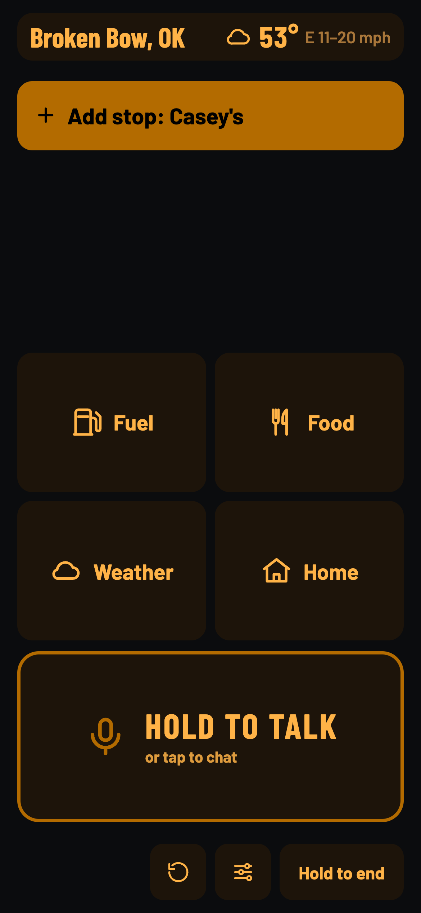
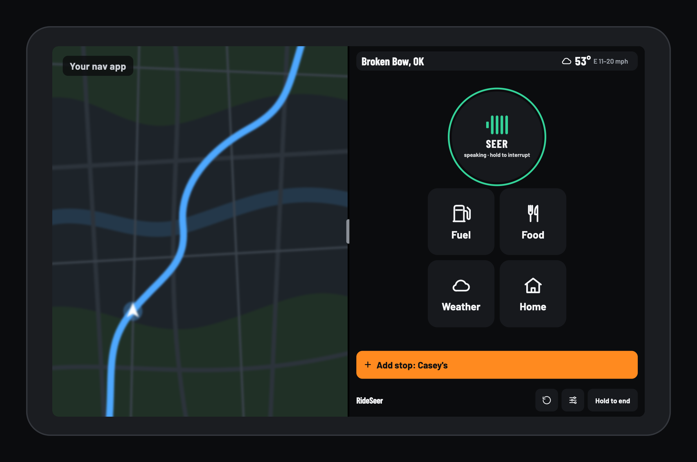
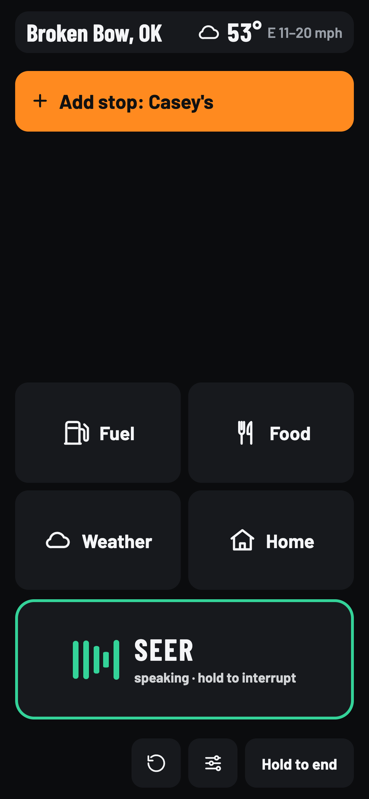

RideSeer user guide
RideSeer is a hands-free journey co-pilot, built for motorcycles, trikes and three-wheelers first. Press a button, ask out loud, and Seer answers in your helmet (or through the phone speaker in a car). It knows where you are, which way you're heading, the weather and your trip.
Not for Android Auto or CarPlay. Those cars already have a voice assistant on the steering wheel. RideSeer is built for motorcycles, trikes and vehicles without one. It won't start a ride while Android Auto is connected, and if Android Auto connects mid-ride, Seer signs off.
It doesn't replace anything. Google Maps still does the turns and your music app still plays. RideSeer sits on top of them so you can use them without touching the screen.

Contents
- What you need
- Install
- First setup
- Talking to Seer
- What you can ask
- Heads-ups
- The ride screen
- Settings
- Ride log and saved spots
- No signal
- Safety
- Privacy and cost
- Troubleshooting
- Known limits
What you need
- An Android phone or tablet. iPhone isn't supported yet.
- An access code. RideSeer is invite-only for now; your code came with your invite.
- On a motorcycle, trike or three-wheeler, a Bluetooth helmet headset. A phone speaker can't be heard over wind at speed. In a car, truck or overland rig without Android Auto or CarPlay, the phone speaker is fine.
- Mobile data. Voice and lookups use little of it.
- Google Maps, if you want Seer to send places to your navigation.
Install
RideSeer is a test build sent as an app file ending in .apk. It isn't in the Play Store yet.
- Open the file on your phone or tablet.
- Android warns about installing from an unknown source. Allow it for the app you opened the file from (Messages, Drive, your browser), then tap Install.
- Updates: install a newer file the same way. It installs over the old one and keeps your code and settings.
First setup
Do this parked. It takes about five minutes.
- Open RideSeer, enter your code and tap Start ride.
- Allow the microphone, location, notifications and Bluetooth ("nearby devices") when Android asks. Without the mic and location, Seer can't hear you or know where you are.
- Pair your helmet headset with the phone as usual. Seer then talks in your helmet and listens on its mic.
- Open Settings (the gear) and set up a talk button you can reach with gloves on. See Talk buttons.
- Optional, also in Settings:
- Save your Home, so "take me home" and the Home button work.
- Turn on Notice when Maps is navigating (notification access). RideSeer can then tell when Maps has a route, and pause or resume your music.
- Turn on Open Maps from the talk button ("Display over other apps"), so Seer can hand a place to Maps while RideSeer is behind it.
- Start your route in Google Maps, then switch to it. RideSeer keeps running behind Maps, or beside it in split screen on a tablet.
Talking to Seer
Every talk button works the same way:
| Do this | What happens |
|---|---|
| Hold, talk, let go | Seer answers once (push to talk). If its answer asks you something ("Want it as a stop?"), the mic opens for your reply |
| Tap once | A conversation: talk, pause, Seer answers, and the mic reopens for your reply |
| Tap again, stay quiet for a few seconds, or say "thanks" / "that's all" | The conversation ends |
| Double tap | Pauses or resumes your music |
| Press while Seer is talking | It stops, and you can talk |
| Fuel, Food, Weather, Home buttons | Asks for you. Fuel, Food and Home then open a conversation, so you can answer "yes" to "Want it as a stop?"; Weather just answers, and your music comes back. Tap one while Seer is talking, or listening in a conversation, and it asks that instead. Dimmed while you hold talk and while Seer is thinking |

If a lookup runs long, Seer says it's still on it ("Still digging. One moment.") rather than going quiet.
Talk buttons
Pick whichever you can reach. You can use several.
- Helmet button. During a ride, the press that normally starts your phone's voice assistant becomes the talk button. The first time, Android asks which app to use: choose RideSeer, then Always. One press starts a conversation; press again, or just stop talking, to end it. Your helmet's music controls are untouched. Outside a ride, that press opens the Google app as before.
- FreedConn T-MAX: hold the main button for 2–3 seconds. Tested.
- Schuberth SC10UA (Sena): hold (+) for 3 seconds, and let go before 5 (that's speed dial). Not yet tested.
- Other helmets: try the press that opens your phone's voice assistant or voice dialing. Some intercoms keep that press to themselves, so it may not reach RideSeer.
- Floating talk button. Settings → Floating talk button over other apps → On, then allow "Display over other apps". During a ride, the RideSeer icon floats over Maps and other apps. Hold it to talk, tap for a conversation, double tap for music, drag it where your thumb lands. It hides while RideSeer itself is on screen.
- Samsung Active key (rugged Galaxy phones and tablets): Android Settings → Advanced features → Active key → choose RideSeer. No learning needed.
- On-screen talk button: a wide bar at the bottom of a phone screen, a big round button on a tablet.
- Other buttons (a Bluetooth remote or handlebar button): Settings → Learn button, then press and hold your button for two seconds. A real hold becomes hold-to-talk; a click-only button becomes tap to start, tap again to send.
What you can ask
Talk normally. Seer answers in one to three short sentences and leads with the answer.
Places. Fuel, food, coffee, lodging, campgrounds, repairs, restrooms, parks, sights and scenic stops. It prefers places ahead of you and says when the best one is behind.
- "Where's the next gas station ahead, and is it open?"
- "Anywhere good to eat in the next 30 miles?"
- "Is there a motorcycle shop near here?"
Sending a place to Maps. After Seer names a place, it offers it: "Want it as a stop?" (when you have a destination) or "Want me to start Maps there?". Say "yes", "take me there" or "add it". A Go button also appears on screen for each place it named. If Android can't open Maps from the background, it tells you to tap the notification at your next stop.
Distance and time. "How far is it to Sturgis?" (add the state when the town name is common). Distances are by road, with traffic.
Your trip. When a ride starts with no destination, Seer asks where you're headed and the mic opens for your answer (stay quiet and it closes after a few seconds). Or say any time: "I'm riding to Devils Tower." Seer plans the route quietly (no directions; Maps does that), so places and time left follow the road ahead. Later: "How much farther?" or "When will I get there?". "Take me home" uses your saved home. Say "I'm just riding" if you have no destination; it won't ask again that ride. Google Maps doesn't share its destination with other apps, so if Maps is guiding you and you ask "How much farther?", Seer asks once where you're headed.
Gas. "Where should I get gas?" or the Fuel button finds the next station ahead, and whether it's open. RideSeer doesn't track your tank range: keep an eye on your own gauge.
Weather. "What's the weather?" or "Is rain coming?". Weather refreshes every 10 minutes or 5 miles on its own.
Marking spots. "Mark this spot, great overlook." Later: "Where was that overlook?" or "How far back is the diner I marked?". It can send a marked spot to Maps too.
This ride. "How far have I ridden today?"
Music (your own app: Spotify, YouTube Music and others). "Pause the music", "Next song", "Previous song", "Play Tom Petty", "Play Highway to Hell". Double tap any talk button to pause or resume. Music ducks while Seer talks and comes back after. A music request happens once Seer has finished (at the end of a conversation); if you press talk for something new before then, it's cancelled, so ask again.
Heads-ups. "Stop the weather alerts", "Turn sunset warnings back on".
Ending. "Thanks", "That's all" or "Bye" ends a conversation.
Heads-ups: Seer speaks up on its own
Without being asked, Seer gives a short warning, once, then gets out of the way:
| Heads-up | When |
|---|---|
| Rain | Rain likely (60% or more), storms (40% or more) or snow where you'll be in the next hour |
| Sunset | About 45 minutes before sunset, once a day |
| Temperature | A drop of 15 °F or more in the next few hours, or a drop into the cold (below 40 °F) |
| Wind | Gusts of 35 mph or more |
It looks 20, 40 and 60 minutes ahead along your planned route, or along your heading if there's no route. Each kind has a quiet period so it doesn't repeat itself. If you're mid-conversation, Seer waits for you to finish (up to 10 minutes) before saying it. Turn any of them off by voice, or in Settings → Heads-ups.
The ride screen
Dark panels with an orange accent. After sunset the screen dims to amber.

- Top panel: the town you're in and the weather. Icons appear only when something's wrong: no GPS, or no signal. Tap it for details.
- The answer's facts, when Answer on screen is on: Seer talks, and the screen shows just the facts behind what it said, such as the places with distance, time and whether they're open, the weather, or miles and time left. An answer with no facts behind it shows Seer's words instead. Your question sits above it on one line, with Go buttons for places Seer named.
- Quick buttons: Fuel, Food, Weather, Home. For when talking is hard (wind, exhaust); they work any time except while you hold talk or Seer is thinking.
- Bottom bar: report the last answer (the flag; see below), replay it, Settings, and Hold to end.
- Talk button. Its colour and motion show the state: orange ring when ready, red while listening (the glow swells with your voice), a moving blue light while thinking, green with bouncing bars while Seer speaks. Nothing moves when it's idle.
On a phone the talk button is a wide bar at the bottom, where your thumb lands, with the quick buttons just above it. The screen stays on during a ride. On a tablet, RideSeer is laid out to sit beside Google Maps in landscape split screen.


Settings
Open with the gear during a ride.
| Section | What's there |
|---|---|
| Screen | On-screen talk button, quick buttons, floating talk button, answer on screen |
| Heads-ups | Rain, sunset, temperature, wind, each on or off |
| Home | Save an address or town, or set home to where you are now; forget home |
| Ride log | Saved spots and past rides |
| Maps | Where stops go (Google Maps), Notice when Maps is navigating, Open Maps from the talk button |
| Talk button | How the buttons work, helmet button notes, Learn button, Clear |
| Share diagnostics | Sends a short log of recent presses, connection and audio events (dated, in UTC), for bug reports |
| Report Seer's last answer | Flags the last answer as offensive, wrong, unsafe or something else (same as the flag in the bottom bar) |
Ride log and saved spots
Settings → Ride log lists:
- Saved spots you marked by voice. Each has Go (send to Maps), Share and Delete. Share asks how: Link (coordinates and a Google Maps link, for messages) or GPX file (a waypoint for map apps such as Garmin Explore or OsmAnd, which keeps the exact spot).
- Rides: distance and time for each ride. Tap a ride to see, and share, the spots marked on it. Routes aren't recorded.
Everything here stays on your device.
No signal
Seer needs mobile data. When you lose it it says, in its own recorded voice, "We've lost signal. I'll be back when we have coverage.", reminds you now and then, and says "Signal's back." when it returns. Weather from before the gap is labelled with its age.
Safety
- On a motorcycle, use a helmet headset. You shouldn't need to look at the screen.
- Do all setup parked. While moving, the only touch should be your talk button.
- Seer can mishear, and places and hours can be wrong.
- Seer never gives turn-by-turn directions and never claims road closures it wasn't given. Your navigation app does the driving directions.
- If something acts up mid-trip, ignore it and keep riding. Deal with it when you're stopped.
Privacy and cost
| What | Where it goes | Why |
|---|---|---|
| Your voice while you talk, Seer's replies, and with each question your location, weather and trip | xAI (Seer's voice service) | To understand and answer you |
| Your location and what you searched for | Google Maps, through RideSeer's server | Places, road distances and drive times |
| Your location | Open-Meteo and BigDataCloud | Weather, and the town name on screen |
| An answer you report: what you asked, what Seer said, your reason, the app build | RideSeer's server, emailed to the RideSeer team | So we can fix it. Only when you tap Report |
| Saved spots, rides, home, settings | Stays on your device | Nothing is uploaded |
RideSeer's server logs one line per request: whose code, which feature, when. It also adds up, per code and per week, how much each rider used: rides, minutes of voice, answers and lookups. Those counts are kept for about a year to work out what RideSeer costs to run. It doesn't keep your audio, your words or your location. Audio is sent only while you're talking to Seer. During a ride Android may show the mic as in use, because RideSeer keeps it ready for your next press.
Your access code is personal: every voice minute and lookup on it is paid for by the project. Don't share it.
Troubleshooting
| Problem | Try |
|---|---|
| Seer can't hear me | Check the mic permission, and that your headset is connected before you start the ride. If Seer says "I can't hear the microphone", another app probably took the mic (a call, a voice chat, another assistant): close it, then press again. RideSeer reopens the mic on that press |
| Helmet button opens Google instead | Start a ride first: the helmet button only talks to RideSeer during a ride |
| Helmet button does nothing | Your intercom may keep that press. Use the floating button or Active key |
| Floating button doesn't show | Turn it on in Settings, allow "Display over other apps", and start a ride. It hides while RideSeer is on screen |
| "Display over other apps" or notification access is greyed out ("Restricted setting") | Android blocks these for apps installed from a file. Try the switch once, then Android Settings → Apps → RideSeer → ⋮ → Allow restricted settings, confirm, and turn it on again |
| "Take me there" doesn't open Maps | Turn on Open Maps from the talk button in Settings, or tap the notification when stopped |
| Music won't pause or resume | Turn on Notice when Maps is navigating (notification access). If Android greys it out: App info → ⋮ → Allow restricted settings |
| "Seer didn't answer" or "Lost the voice link" | The answer got lost, usually in weak signal. Press and ask again |
| Code rejected | Check spelling; ask for a new code if it was changed |
To flag a bad answer (offensive, wrong, unsafe): when stopped, tap the flag in the bottom bar, or Settings → Report Seer's last answer, and pick a reason. It sends the question and answer only, no location or recording.
To report a problem: when stopped, open Settings → Share diagnostics and send it soon (it keeps only recent events). Add when it happened, what you pressed or said, and what you expected. The log has no location, code or anything you said.
Known limits
- Android only for now.
- "Play" a song or artist may open your music app's search with it filled in; you may need to tap the top result. Pause, resume and skip are fully hands-free.
- Stops go to Google Maps. Waze, OsmAnd and Apple Maps are planned.
- Some helmet intercoms don't pass the voice-assistant press to the phone.
- Not for Android Auto or CarPlay, and support isn't planned. With either connected, use the car's own assistant (Google's or Siri): the car keeps its mic, so Seer couldn't hear you. So while Android Auto is connected, Start ride explains this instead of starting, and if Android Auto connects during a ride, Seer says it's stepping aside and the ride ends (the ride log keeps it). Disconnect Android Auto to ride with Seer again.